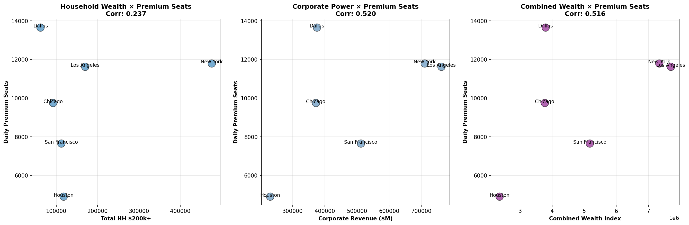

← Back to Dashboard
Premium Seats Market Analysis
Addressable Market for Helicopter Services at Major U.S. Airports
Data: Long-haul international flights (>1500km) - October 2024/2025
Executive Summary
Analysis of 600,000 long-haul international flights (sample) across 6 major U.S. airports reveals
22.4 million premium seats annually (61,327/day average), representing the potential
addressable market for premium helicopter ground transportation services targeting business and first-class travelers.
61,327
Premium Seats Daily (Average)
600K
Flights Analyzed (Sample)
1. Market Size by Airport
| Airport |
City |
Daily Premium Seats |
Annual Projection |
Market Share |
Top Carrier |
| KDFW |
Dallas |
18,821 |
6.87M |
30.7% |
American Airlines |
| KLAX |
Los Angeles |
10,983 |
4.01M |
17.9% |
American Airlines |
| KJFK |
New York |
9,951 |
3.63M |
16.2% |
Delta Airlines |
| KORD |
Chicago |
8,662 |
3.16M |
14.1% |
United Airlines |
| KSFO |
San Francisco |
7,725 |
2.82M |
12.6% |
United Airlines |
| KIAH |
Houston |
5,185 |
1.89M |
8.5% |
United Airlines |
2. Wealth Correlation Analysis

Key Findings:
- Corporate Revenue shows positive correlation (0.227) with premium seat availability
- Business travel drives capacity: Cities with higher corporate revenue have more premium seats
- San Francisco anomaly: Highest premium capacity despite mid-tier household wealth (tech/Asia routes)
- Houston underserved: Strong corporate market but lowest premium capacity
3. Strategic Implications for REVO
High Priority Markets
- Dallas (KDFW):
- Largest market: 18,821 premium seats/day (31% of total)
- American Airlines mega-hub - dominant corporate travel
- Currently underserved by helicopter operators
- Recommendation: #1 priority market for REVO expansion
- Los Angeles (KLAX):
- 10,983 premium seats/day (18% of total)
- Entertainment/business blend + international gateway
- Existing helicopter culture and infrastructure
- Strong FBO presence (3 operators)
- New York (KJFK):
- 9,951 premium seats/day (16% of total)
- Financial sector + international business
- Complementary to existing Manhattan operations
- High FBO coverage (71% of clusters)
Growth Opportunities
Chicago & San Francisco - Balanced Markets:
- Chicago: 8,662 seats/day - United hub with strong domestic/international mix
- San Francisco: 7,725 seats/day - Tech sector + Asia-Pacific gateway
- Houston: 5,185 seats/day - Energy sector focus, growth potential
- Opportunity: All three have strong corporate bases and moderate premium capacity - balanced risk/reward
4. Conversion Potential
Conversion scenarios from premium airline seats to helicopter ground transportation:
| City |
Daily Premium Seats |
0.32% (Conservative) |
1% (Low) |
3% (Mid) |
5% (High) |
| Dallas |
18,821 |
60 |
188 |
565 |
941 |
| Los Angeles |
10,983 |
35 |
110 |
329 |
549 |
| New York |
9,951 |
32 |
100 |
299 |
498 |
| Chicago |
8,662 |
28 |
87 |
260 |
433 |
| San Francisco |
7,725 |
25 |
77 |
232 |
386 |
| Houston |
5,185 |
17 |
52 |
156 |
259 |
| TOTAL |
61,327 |
196 |
613 |
1,840 |
3,066 |
Total Addressable Market (6 cities):
- At 0.32% conversion: 196 helicopter PAX/day (~71,500/year) - Conservative baseline
- At 1% conversion: 613 helicopter PAX/day (~224,000/year) - Industry low
- At 3% conversion: 1,840 helicopter PAX/day (~671,000/year) - Industry average
- At 5% conversion: 3,066 helicopter PAX/day (~1.12M/year) - Optimistic scenario
5. Data Files
📊 Market Summary (CSV)
✈️ Detailed Flights (CSV)
📈 Cluster Analysis (CSV)
← Back to Dashboard